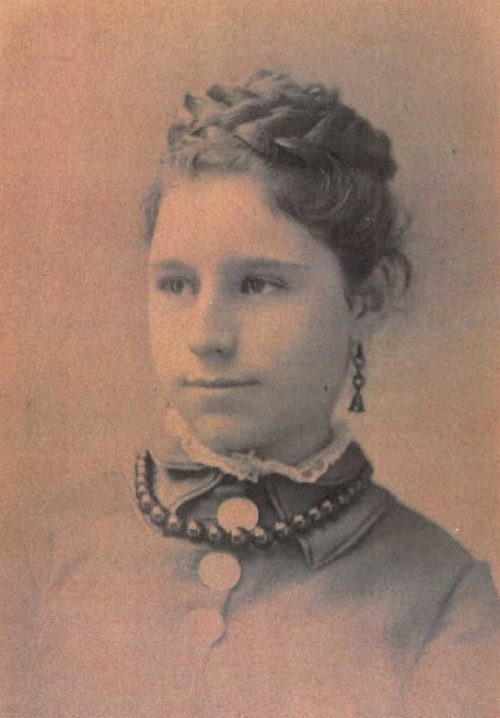
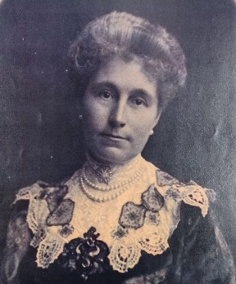
Some readers are very familiar with Lucy Maud Montgomery's charming novel "Anne of Green Gables," great summertime reading, and made into movies, sequels and mini-series. When it had been published in 1908, another quite unfinished story of a very real Anne (spelled with an "e") continued to unfold in the same era — though not on Prince Edward Island, but with roots that began in Cornwall, Pennsylvania. Her early years are reminiscent of the precocious and self-proclaimed romantic Anne Shirley. To set the stage of this remarkable story, imagine the latter exaggerating with great passion (and with Marilla Cuthbert rolling her eyes) this scene at the close of the long life of Anne Coleman Rogers…
"The 52-year-old president bid farewell to his dear old friend Mrs. Rogers and made his way out of Crumwold Hall to the waiting limousine and his wife Eleanor Roosevelt. Returning to his own Hyde Park estate, he had said his good-byes to his ailing neighbor, the sweet, caring lady of the mansion…"
Born Anne Caroline Coleman in Cornwall, Pennsylvania October 27, 1858, the elderly woman rested peacefully in her remaining hours, occupying the same room where she had said goodbye to her own mother Susan Ellen Habersham Coleman in 1892. Likewise, she cared for her only brother Robert H. Coleman for six months, who suffered stomach cancer before dying in 1930. She died at age 75, March 2, 1934 in her Hyde Park mansion.
Anne's Family Tree
"Anne Caroline Coleman" seems a common name for this uncommon woman, whose life and ancestry touched many facets of American history from the 18th to 20th century. Tradition in the Coleman family repeated names like Robert, Anne, William, Margaret, Sarah, and Edward, across the generations ever since the family founder, her great-grandfather Robert Coleman married Anne Caroline Old in 1773.
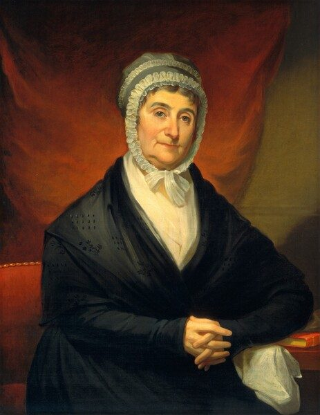
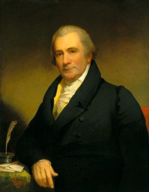
The following simplified family tree may untangle this confusing assortment of Anne Carolines: our Anne had a close cousin in the Freeman line by the same name. Then, her aunt, builder of Cornwall's Alden Villa (Millwood), was also Anne Caroline Coleman before marrying Capt. Bradford Alden of the Mayflower Alden line. And her great-aunt Anne Caroline Coleman was sister to Thomas Bird Coleman, both offspring of Robert and Anne Caroline (Old) Coleman. Our Anne's brother Robert later honored her by naming his only daughter, her niece, Anne Caroline Coleman. Confusing possibly to bystanders like us, but not to the memory of this woman who lay dying in the last days of a New York winter early in March of 1934.
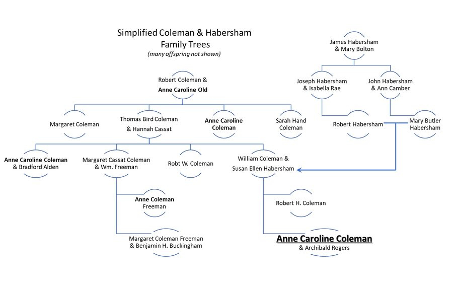
Her own descendants have described her as the family historian. One might imagine, as she lay there in her final hours, that she reflected on the long history of Coleman influence in the birth and growth of America. The first Robert Coleman, arriving from Ireland as a teenager, became a clerk in Philadelphia to men in the circle of Benjamin Franklin. To these he demonstrated his business acumen and trustworthiness, found his way into the iron business and in time rose to greatness as Pennsylvania's first millionaire. Later, he is said to have given counsel to President George Washington on the wisdom of running for a second term, and was himself almost elected U.S. Senator in 1793. He served as a judge in Lancaster. A visitor to Robert Coleman's death bed in 1825 was the Marquis de Lafayette, who wished to honor "the aged patriot and revolutionary officer, Robert Coleman."
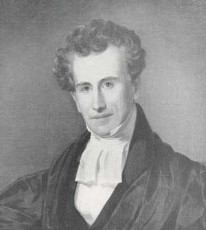
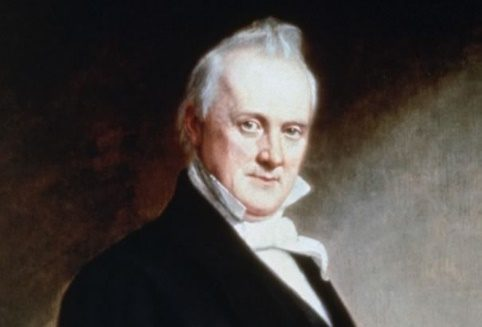
Retired from the iron business, Robert Coleman was still reigning as family patriarch when in 1819 a lawyer named James Buchanan became engaged to his daughter Anne Caroline. The well-known tragic story of their strained relationship ended in her mysterious death. Robert Coleman denied Buchanan, who later became our nation's only "bachelor president," the privilege of attending her funeral.
Scarcely a year later Anne's sister Sarah nearly became engaged to Rev. Wm. Augustus Muhlenberg, distinguished young pastor of St. James Episcopal Church in Lancaster. Robert Coleman, a staunch pillar and churchwarden, engaged Muhlenberg in a power struggle over church affairs (Muhlenberg advocated starting a Wednesday evening service, which Coleman opposed). Coleman consequently forbade the relationship with his daughter. In 1825 Muhlenberg won the church battle, and Coleman had died but not before stipulating in his will that Sarah's trust fund and marriage must be approved by her brothers. She fled to her sister Margaret's home in Philadelphia, and later died in the same mysterious manner as her sister. Edward, her brother, saw to it that Muhlenberg was removed from the pulpit of St. James. Muhlenberg lived on to a celebrated career.
But our Anne's thoughts were more likely focused on her own happy memories, like those of young childhood visits to her mother's family homestead in Savannah, Georgia. And what circumstances connected our quaint Cornwall to Savannah?
Southern Roots
The year after her great-grandfather's death, Anne's father, William Coleman, was born in 1826 at the Coleman estate in Colebrook, where her grandfather Thomas Bird Coleman resided. Soon after, Thomas acquired the rights to the Cornwall Furnace and moved into the Cornwall Estate (now Cornwall Manor) after 1830. His sons William and his older brother Robert W. became young heirs when Thomas died in 1836; Robert W. attained his majority in 1845 with 19-year-old William at his side.
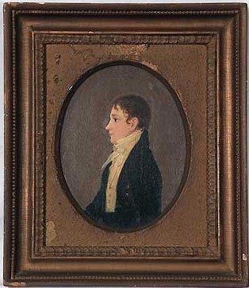
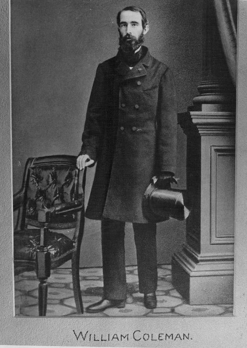
With economic forces depressing the iron market, family advisor Samuel Small of York, Pennsylvania encouraged William Coleman to travel south to Savannah in search of trading opportunities. Savannah, serving as the shipping conduit to the northern states, had plenty of southern cotton but needed northern iron. There William met Susan Ellen Habersham, married in June of 1855 and returned to the north by the end of the year. They lived with bachelor brother Robert W. in the Cornwall (now "Buckingham") mansion for some time and by 1858 had moved to "The Cottage," their home in Cornwall center.
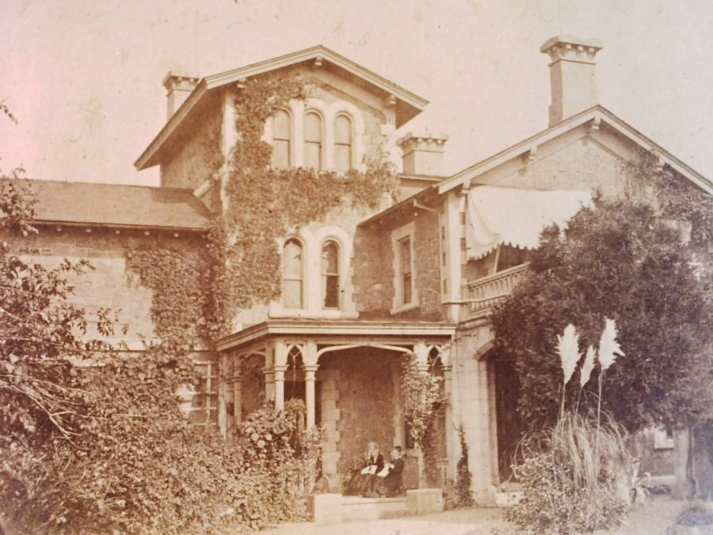
Soon she was pregnant with Robert H. Coleman and the following January she traveled back to the warmer climate of Savannah, giving birth on March 27, 1856. It became "Sue Ellen's" custom to return to the north in the late spring and back to her extended Habersham family after the year-end holidays. Consequently, our Anne Caroline Coleman, conceived in January, was born in Cornwall on October 27, 1858. When the "War of the Rebellion" (Civil War) began in 1861, the family would not visit the South again until 1866.
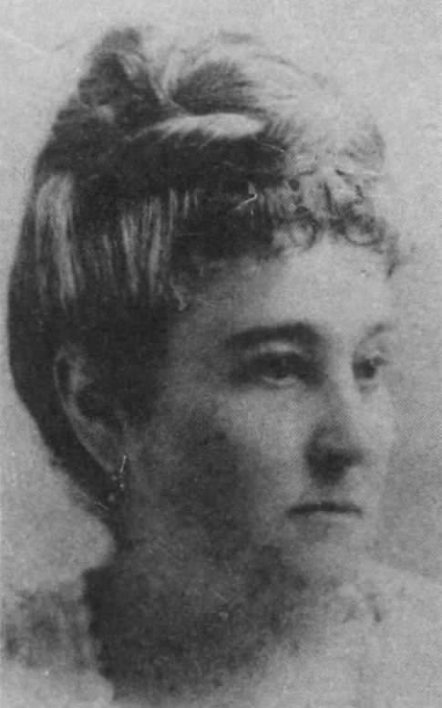
The Habershams
It certainly bears mentioning that Anne's mother Susan Ellen Habersham brought her own distinguished ancestry to the Coleman marriage. Her great-grandfather James Habersham arrived in Savannah, Georgia in 1740 (the same early years of our Cornwall Mine), as a missionary from England in the company of the famous evangelist Rev. George Whitfield, serving in the same region as missionary John Wesley, "father of Methodism," had a few years before. Having served as president of Whitfield's Bethesda Orphans' Home, James' work was recognized and his role in the colony expanded, ultimately to serving as Governor of the Georgia colony. He established a commercial house and exported the colony's first bale of cotton. His first son, James, rose to become Speaker of the Georgia Legislature. The family had switched from being royalists to patriots, aiding the fight for Independence. The Habersham name is recognized in the provincial congress of 1775.
James' second son Joseph, who raided the Royal magazine to provide gun powder to the colonists, was Sue Ellen's paternal grandfather. He rose to become Washington's third Postmaster General in 1795. By her father's third marriage to Mary Butler Habersham, Sue Ellen's maternal grandfather was James' third son John, who also distinguished himself in the Continental Army and later served in many civilian posts in Savannah and Augusta. Her father Robert is described as an "eminent merchant who held high office in the church," Savannah's 290-year-old Christ Church, founded 1733 with the establishment of the colony.
A much more detailed history of this illustrious Southern family can be enjoyed in Bulloch's exhaustive "A History and Genealogy of the Habersham Family" (1901).
"Our" Anne's thoughts were probably of warm childhood winters in Savannah, summers in Cornwall, travel to the south by train and steamer, and even memories of carriage rides and skating parties in Central Park of — yes, New York City.
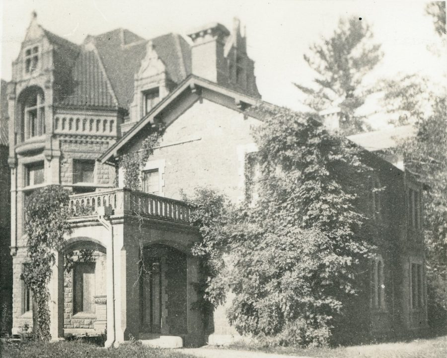
Anne's father William Coleman had died in 1861 at age 35. His older brother continued to manage the Cornwall furnaces until his death three years later. Anne Caroline (Coleman) Alden, aunt of our Anne, had lost her husband many years earlier, and resided in New York at 3 E. 40th Street at the corner of Fifth Avenue (now the site of a Marriott Courtyard hotel), enjoying her prosperity in the grand city. Preferring not to winter-over at the Cornwall Cottage, widow S. Ellen Coleman followed suit, living with "Auntie Anne" as she was called in Sue Ellen's letters to son Robert, until taking up her own residence in 1873 three blocks away at 340 Madison Avenue, adjacent to the newly-erected St. Bartholomew Episcopal Church, and with a view of Grand Central Station from her window (the entire block has since been replaced by a modern office building; St. Bartholomew's had relocated earlier to Park Avenue in 1918). Having been accustomed to travelling to the south in the winters, depending on the season she spent much time raising Anne and Robert in New York City and returning to Cornwall in the pleasant summer months. From New York they would also travel regularly to Europe. Trips to Savannah included stopovers in Washington D.C. to stay with her sister Margaret Cassat Coleman Freeman, in their mansion on H Street, across Lafayette Park from the White House.
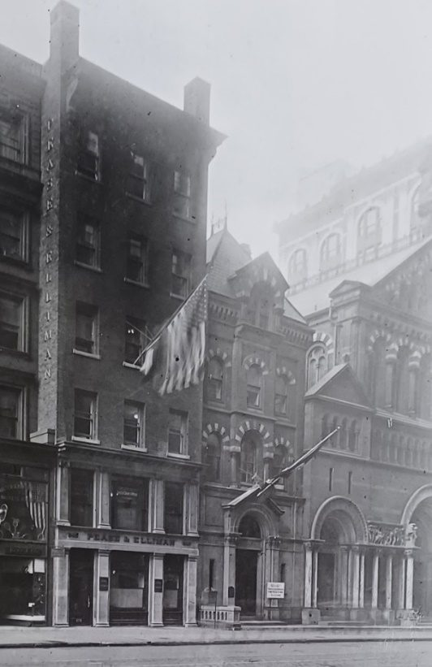
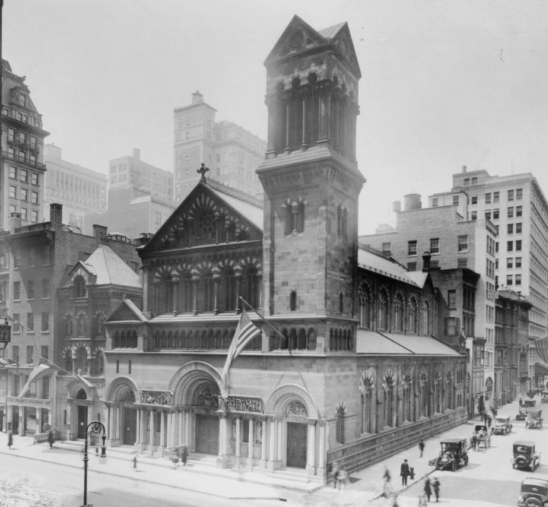
Anne's Childhood
Our young Anne enjoyed therefore a variety of experiences. Winters in New York, summers in Cornwall, travel by train and steamers to Savannah, Washington, and Europe. Mother doted upon her, ensuring she had the finest education and social life.
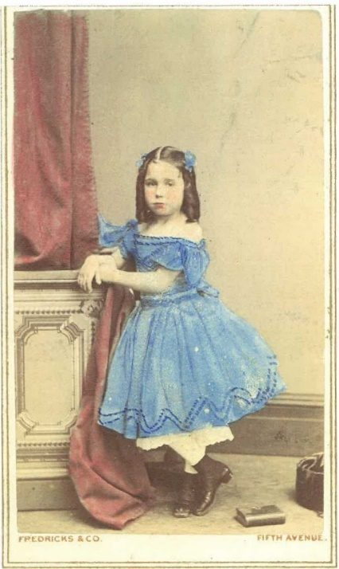
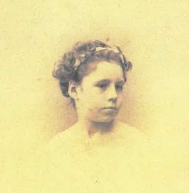
When young Robert had been sent off to school in Hamden, Connecticut, both Mother and Anne would write faithfully to encourage him and to keep him apprised of all developments. Correspondence was a discipline exercised nearly every day and poor Robert would be chastised for falling behind in his letters to home (he couldn't win, for when he did write he was corrected by Mother for his poor spelling and hand-writing, or for getting in trouble with the headmaster). With those letters from New York, Cornwall, Washington, and Savannah a picture of Anne's life is brought into focus, spanning the years from young childhood to her marriage at age 21.
By age 10 (the earliest mention in letters) young Annie has been enjoying dance lessons. At age 11 she is found in Savannah, attending Christ Church with her mother, celebrating Easter and participating in the children's choir. Back in New York shortly after, she had become fascinated with "decalcomania," an arts and crafts craze from Europe, used to transfer images and designs (shortened in the 20th century to "decals"). By autumn, in Cornwall, she is besting her mother "at pistol."
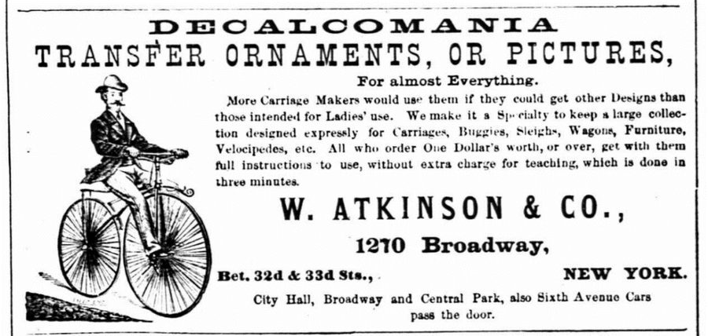
That fall, Annie turned 12 and they are staying with Auntie Anne in New York, where Annie again begins school; Auntie Anne and daughter Sarah (Alden) meanwhile head off to Nassau. Mother and Annie have "taken a pew" at church and hope that Robert will like it. She continues school throughout winter but has time to go for sleigh rides in Central Park (a "splendid sleigh" with six horses and a team of four men), and ice skating on the frozen pond.
Just before Easter again, they are in Savannah where a cousin has given Annie a "dear little dog, which perhaps [Mother] will allow her to keep down at Davy's house in the country [at Cornwall]." Back in New York, sad news is received from Jonathan Leibig, caretaker at Cornwall, that Annie's kitten has died. Both Annie and Robert receive a weekly allowance from Mother; Annie keeps Robert's allowance safe while he is away at school.
That fall, Annie writes to her brother and it becomes clear that she dotes on him just as much as does Mother. She writes "we miss you like a scarecrow." Though Annie has caught a cold from Mother, she is enjoying a pet goldfish as well as a game of Parcheesi with her aunt. A few months later she is learning to play Euchre. At age 13 she continues dance classes and attends a ball "with lots of finery."
After wintering in New York, Savannah and Washington the return to Cornwall is quite precious. "We found our sweet lovely home looking lovelier than ever. The men looked very happy to welcome us and even the horses and birds seemed to know we had come. Our little Fritz [bird] was very glad to smell the pure country air and sang its sweet little song over and over again. Fido came up at once and knew Annie, and you were alone wanted to make it all complete. Sammy [horse] is well, and Annie has just returned from a delightful ride. Molly is ready for you. As to the roses they are handsome though they have been for a long time, two or three years at least."
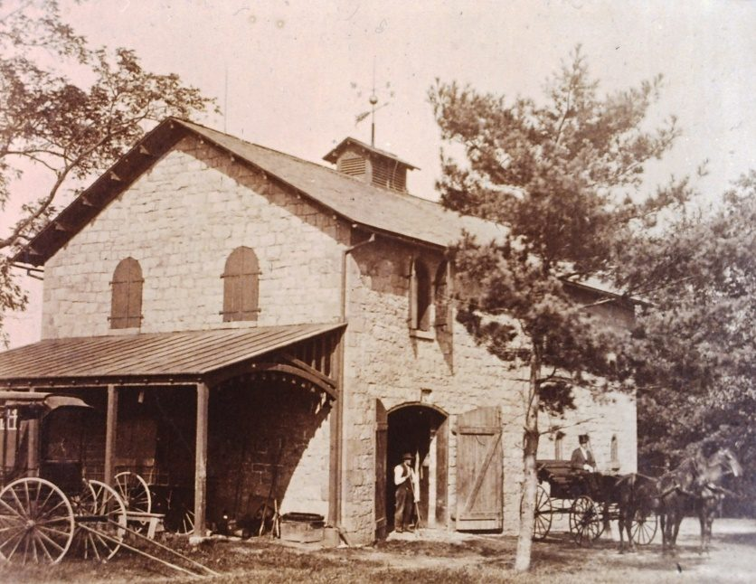
The following winter, back in New York, 14-year-old Annie earns a medal at dance school. Mother worries over the chilblains that Annie suffers in the cold weather. She writes to Robert about mysterious Valentine's cards she received from an admirer in Savannah. Given the 1873 cholera epidemic in Savannah they have concerns of making their winter trip to the south. But they head south, stopping in Washington and witnessing Grant's inauguration to his second term.
If not cholera they had frequent concerns about the threat of yellow fever in the South. While in Savannah Mother worries about Annie's health (though thankfully not yellow fever), but "Annie is getting well, she is as usual the dear little unselfish soul, although I cannot now call her little as she is quite as tall if not taller than me." Mother suffers from her own headaches and nervous disorders.
Back in New York they are living in their new quarters on Madison Avenue. Mother mentions Annie's beauty and sweetness as a young lady. "We have had our little carriage opened and it is lined with white and the little coachman is dressed in light colored cloth and a shining bearer hat and we look very fine. I am of course in deeper black [mourning a recently deceased relative] but Annie dresses up now in blue and gives the carriage a gay appearance. Our situation here is very lively now, and in the evening after dinner we amuse ourselves sitting by the window upstairs and watching the people running to catch the train and seeing the little boys running a race to light the lamps. The square looks lovely after the gas is lighted and reminds us of Europe."
The same pattern repeated during her teenage years. At 16 she became quite the socialite and made a point of writing to Robert faithfully every day to keep him informed of every detail of her life, and reminding him how many letters he owed her in return. Summers in Cornwall were a delight. Though her brother cherished his bicycle, she preferred riding horseback to and fro, whether to the train station to see her friends off, or to visit nearby Colebrook perhaps for a game at the family bowling alley. She kept doves and guinea pigs as pets, and enjoyed fresh strawberries and raspberries. Croquet and Cribbage tournaments were a common occurrence and taken very seriously among the cousins (so serious were their competitions they had forms preprinted with the initials of the players). She writes to brother Robert with faux formality: "Mr. Habersham [her visiting uncle John Rae Habersham] wishes to inform Mr. Coleman that he whitewashed Mr. Alden this afternoon." In autumn she reflects in her letter from Cornwall to Robert: "This is the last letter I will write at my little desk this Summer, and I feel dismal, doleful and dreary at having to leave. The country never looked so pretty as it does this evening with the setting sun making the bright red and yellow leaves glow beautifully and the mountains look like huge bouquets [move over Anne Shirley!]. We have been having an early Indian Summer and a most delightful one and it just seems to be clearing off now. I believe Blossie comes home every Friday for she and Sadie were in town yesterday, the former looked very pretty but I can't say that much for S. We are going over to church this evening. Mother is waiting for me to go down to the arbor, so I must close."
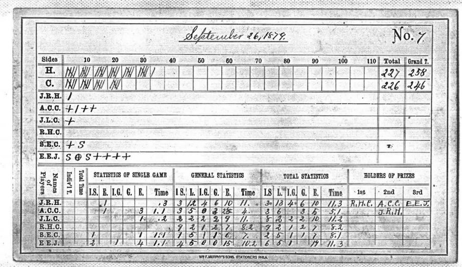
At age 18 she was continuing her daily lessons, which included French, music, drawing, literature, German (which she described as "really learning Dutch"), and of course dance. Attending "balls" was a frequent social occasion, sometimes fraught with disappointment, such as not being invited to someone's ball even though the person had been a guest previously and should have returned the favor.
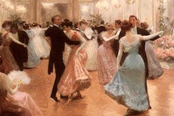
In her letters to brother Robert were frequent mentions of having attended, or hosting at times, a "german." This, referring to the custom in the 1870s of a social dance. According to the Library of Congress, "German" was another name for Cotillion, a dance derived from 18th century contradances that operated in a small square, hence the name quadrille. The name Cotillion comes from a word meaning "petticoat," and from the poem, "My gossipy companion, how does my petticoat look when I dance? It goes like that, like the tail of the cat." The cotillion evolved into a final series of improvisational dance parties, which often included party favors. It became the German Cotillion, in which the master of ceremonies directed a series of musical dance games akin to parlor games, with exchanges of partners through chance and playful encounters. One of the games was "Blind Man's Bluff" — in which the male dancer, while blindfolded, chose from one of two female partners. One of the two might be replaced by another male, and the blindfolded man must dance with whomever is chosen. Grand fun, and even prizes were part of the evening's entertainment.
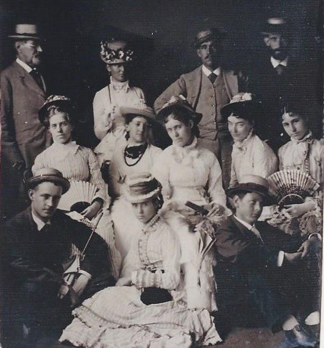
The above photo was taken in Lancaster in the summer of July 1879, the Coleman cousins having driven in from Cornwall in a "four-in-hand" carriage (or two) according to the inscription. Top row (left to right): Uncle John Habersham of Savannah, Miss Edward (visitor), Robert H. Coleman, Wm. C. Freeman. Middle row: Anne C. Freeman, Sophie Montgomery (visitor), Lillie Clarke (engaged to Robert), Edith Johnstone (Robert's second wife), Anne C. Coleman. Bottom row: Edward C. Freeman, Margaret Coleman Freeman (Buckingham), Arthur Elliott (southern cousin).
With the dances and social life, Anne had a number of young gentlemen friends. Mother worried when Robert Barnwell, a southern cousin, expressed his affections for Anne but would be refused. "I am indeed sorry Anne cannot love him in the way he wants her to do, for she will never again find such a fine Christian character as Rob's, and what is there in this world compared to that? I hope sincerely he is not really in such dead earnest that he cannot find someone to take her place, for I think he wants to marry at once. I have thrown them together as much as I could and have never stood in the way, for I know his worth. I sometimes fear Anne will never marry, for she differs from other girls in many respects, but most particularly in never having cared whether she ever married or not, although for two years she has known she could become engaged at any time she chose."
Anne's Marriage
While enjoying the social life of New York City, Anne had many suitors, including Archibald Rogers, who is mentioned in her mother's letters as early as 1877. They became engaged and married in St. Bartholomew's Church May 11, 1880, a year after her brother's marriage to Lillie Clark. The wedding had been planned for June 1st, but news of Lillie's declining health (in Paris) caused them to move the date up to May 13th. When Lillie passed away on Monday the 10th, Archie and Anne were quietly married Tuesday afternoon at 3:00 o'clock, allowing mother Susan Ellen to board a steamer to Europe to be with her son. As reported in the Lebanon Daily News, the marriage was a very quiet one, no one being present except the immediate families and a few friends of the bride. "The usual trip was omitted, and Mr. and Mrs. Archibald Rogers took the evening train on the Hudson River Railroad for Hyde Park, the home of Mr. Rogers."
Earlier that year Anne had written to brother Robert, from Savannah: "I hear from Archie every day … I think he is a model young man, don't you, with all he has to do too. He is still flying round the country inspecting machinery, building mills, cutting wood, etc. but with it all he is papering and furnishing the sweetest little cottage on the Lake, all ready for his Bride when he gets her."
Graduated from Yale, Rogers had a career with Rogers Locomotive Works and John D. Rockefeller's Standard Oil company. He also was a civil engineer for the construction of several railroads. Later, in 1895 he would be appointed Colonel on the staff of New York Governor (and former Vice President under Benjamin Harrison) Levi Morton, and serve as the head of the First Provisional Regiment in the state during World War I.
Rogers enjoyed hunting and traveled throughout the western US. He acquired trophies from his hunts that were mounted and displayed in Crumwold Hall. His possessions included the artwork of Wm. Jacob Hays, including at least one of a buffalo herd, that was later donated from his estate to the American Natural History Museum of New York in 1934. Their youngest daughter Anne Pendleton Rogers would later own a ranch in Buffalo, Wyoming.
Archie and Anne lived at the family estate at Drayton Point, which was later to become part of the Vanderbilt estate. In addition to their New York City residence at 35 W. 53rd Street (the block now occupied by the Museum of Modern Art since 1929), Archibald held an ambition of building Crumwold ("Little Plain"). It was finally completed in 1888 (the same year Robert H. Coleman built his "second mansion," Cornwall Hall), having spent three years alone in design with architect Richard M. Hunt. It has been described in one newspaper account as the "Largest house on the Hudson," after acquiring 5 estates, almost 1,000 acres with 1 mile frontage on the Hudson River. The "big house" was decorated in part to reflect his years of ranching in Wyoming, with many big game trophies and Native American artifacts.
Archibald's story would fill another article, of his 30-acre polo grounds, the "Jack Frost" iceboat racing on the Hudson, and large "drag-hunts" on the estate with hordes of hounds and horse riders in red coats and silk hats. He fathered "six strapping sons" who would fill the big house. His philanthropy was well-known. As comfortable as he was at their own estate, he and Anne also frequented the estates of friends at Newport, Rhode Island.
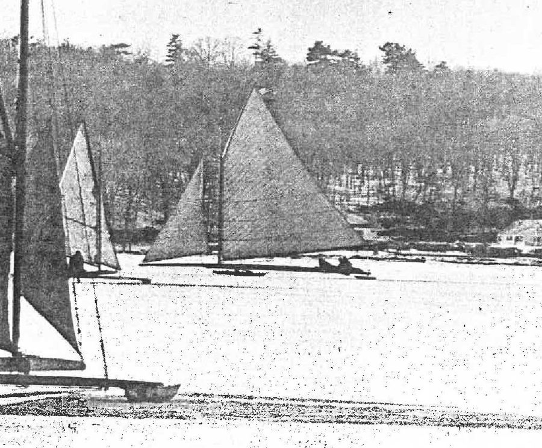
But this story is about Anne.
Their marriage was the merger of two great fortunes. On his death at Crumwold Hall on May 9, 1928, Archie left most of his $2,826,000 estate to his widow, adding to her personal fortune from the Cornwall iron industry, which far exceeded that at the time of their marriage in 1880.
A week after their wedding the Times had reported: "There is on file in the Lebanon Court House a remarkable document drawn up by one of the foremost lawyers of the State. The document is the transfer of real estate and iron interests of Miss Annie C. Coleman of Cornwall just prior to her marriage with Archibald Rogers in New York the other day. Miss Coleman conveys all her property, jewelry, cash in hand, horses, carriages, furniture, etc. to her brother Robert Coleman of Cornwall to be held by him, he agreeing to pay certain amounts as the annual income of the estate. Due provision is made for the distribution of the property in the event of the death of the lady and there being heirs born of marriage. The document is duly signed by Mr. Rogers who promises never to do anything to interfere with the above arrangements."
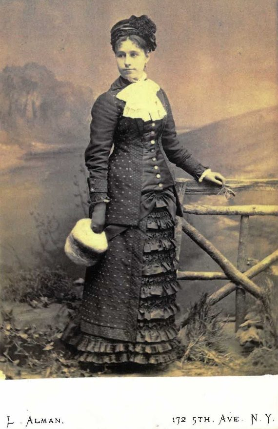
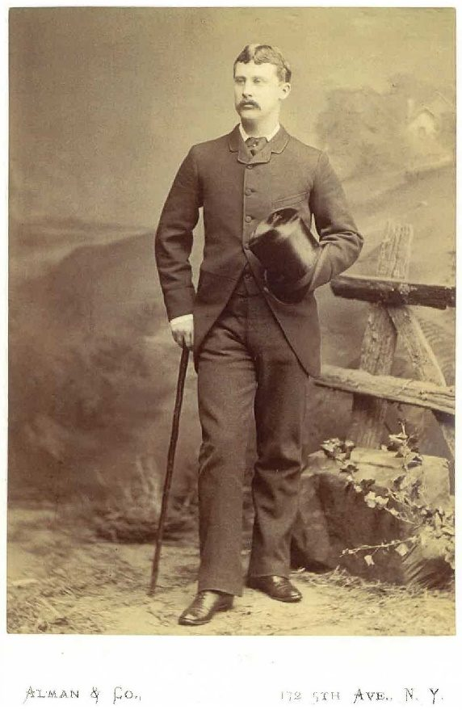
Robert H. Coleman had arranged the pre-nuptials for their marriage, as Anne's income from the Coleman wealth amounted to about $1,000 a day. Prior to her marriage Robert had been managing her assets on her behalf. Samuel Small of York, PA, who had been trustee and counselor to Robert and Anne as they came of age, had encouraged this provision to protect her estate.
Robert would continue to participate in her financial affairs in the following years. In 1889 he, with Archie, undertook to lease the Emmaus Furnace near Allentown as her trustee, enabling Anne to keep her finger in the family's iron business. Records into the 1890s refer to it as the "Crumwold Furnace."
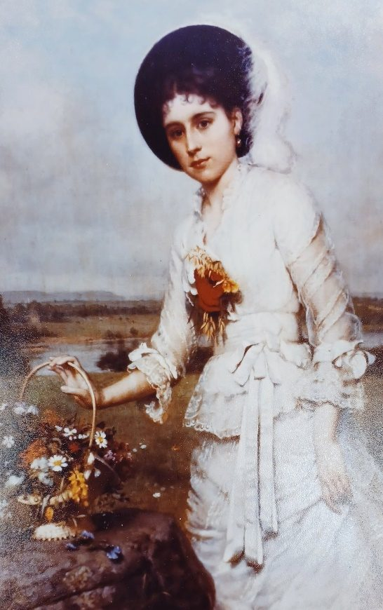
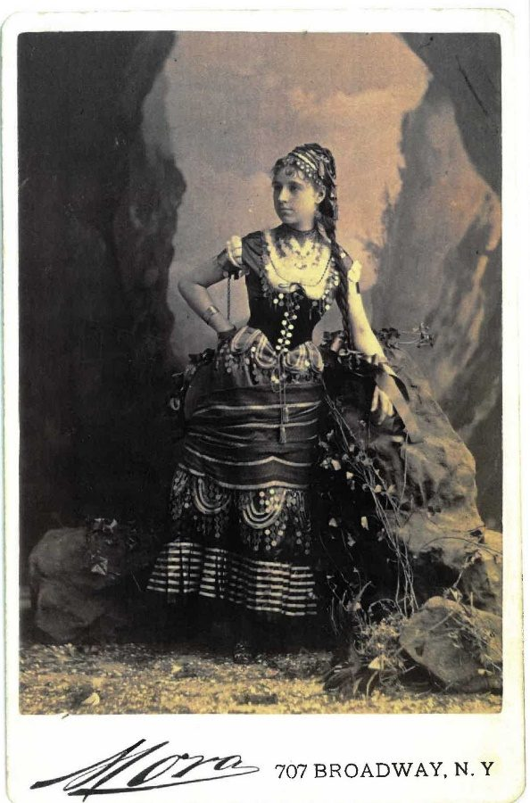
The Grand Life of Anne C. Rogers
Anne's passion for dance continued throughout her adult years. Two-steps and waltzes were the rage of the day. The Crumwold Acres estate was well known for its New Year's Eve parties with as many as 100 guests attending in the mansion's spacious ballroom, which measured 50 by 60 feet long. Families represented at these parties included the Astors, Huntingtons, Chanlers, Roosevelts and Delanos.
It is safe to say that Anne's life of luxury far exceeded that of her brother Robert H. Coleman. He had achieved greatness and was well known in Lebanon and Cornwall for his generous hospitality. Although it had been cut short by his financial failure, he would continue to live comfortably for decades with his wife and children at his "Coleman Cottage" in Saranac Lake, New York.
In her adulthood Anne grew further in stature and sophistication. Beginning at age 23, she and Archie parented eight children: Archibald (1881), Edmund Pendleton (1882), Robert Coleman (1883), William Coleman (1885), Rae Habersham (1887), Ellen Habersham (1889), Herman Livingston (1891), and Anne Pendleton (1894).
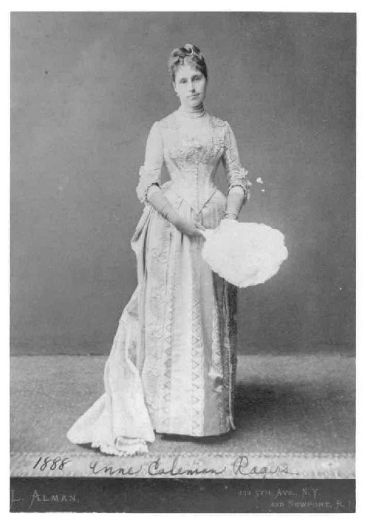
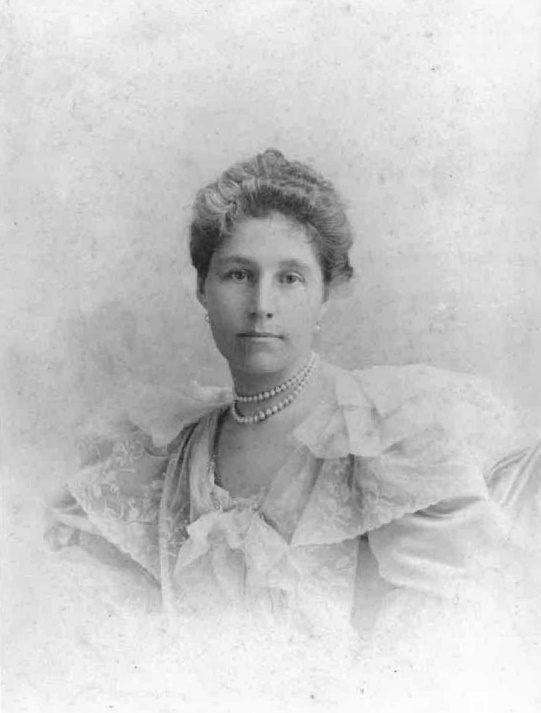
The dining room of Rogers' 74-room mansion would host as many as 60 persons for dinner. A worker in the household recalled about 22 maids sitting down for a meal in the servants' dining room. About two dozen male attendants took their meals in another room.
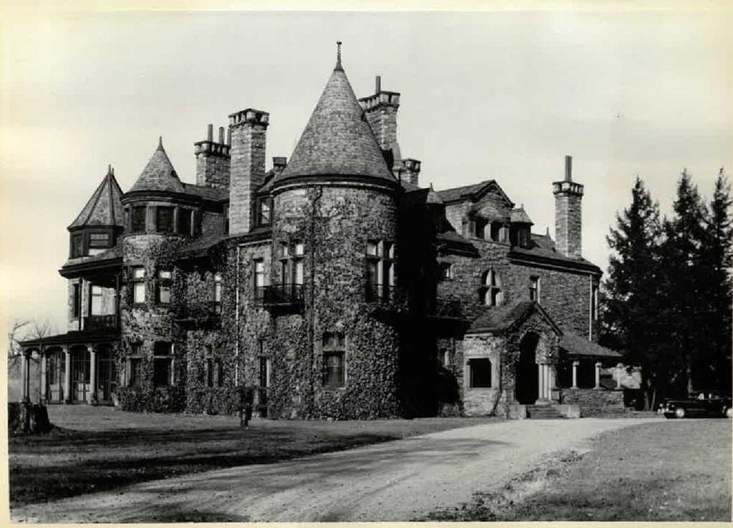
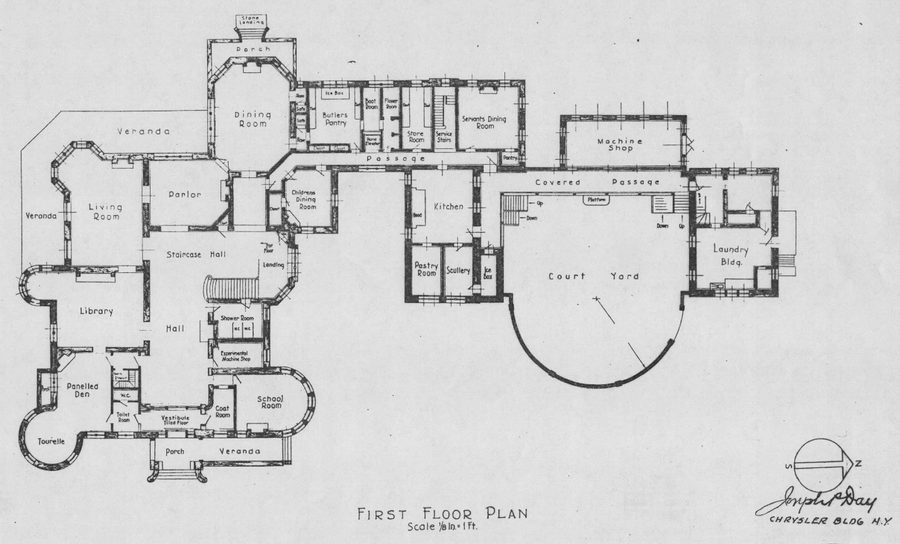
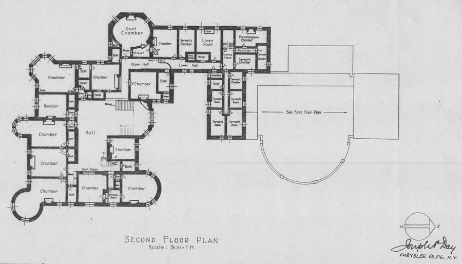
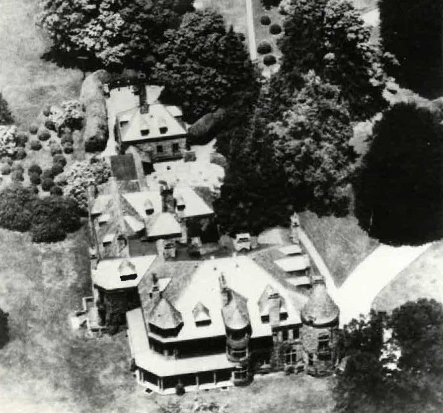
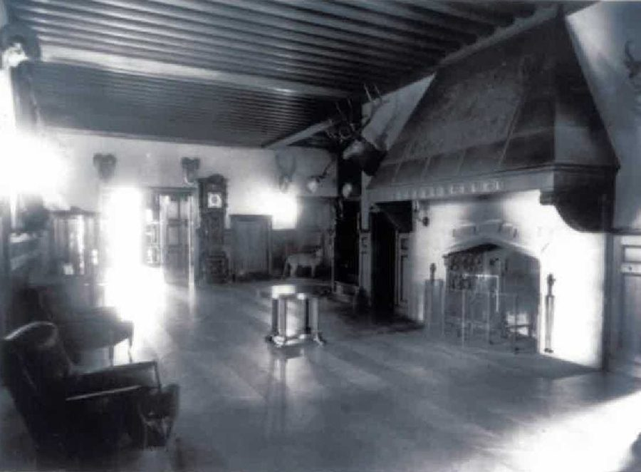
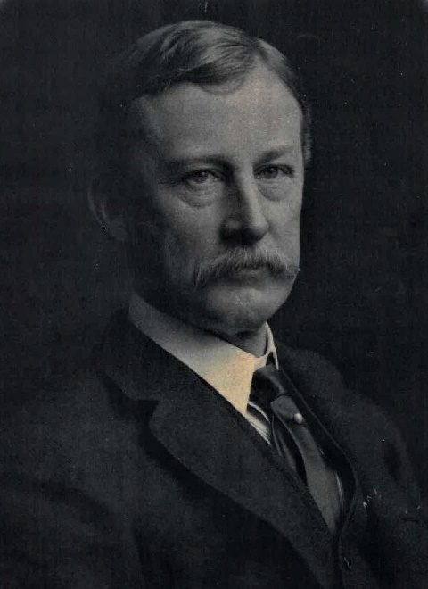
Along with the grand social life in Hyde Park, Anne shared the philanthropic kindness that had been the passion of her mother. S. Ellen Coleman had supported churches, helped to found Good Samaritan Hospital (along with another Coleman, Mrs. Horace Brock) and a children's home in Jonestown.
For a time, a plaque in a room at Vassar Brothers' Hospital in Poughkeepsie stated "Given in Memory of Two Infants by Archibald and Anne Rogers." A representative of Vassar Brothers recently confirmed to the author that Anne Rogers was a benefactor of the hospital (1929 annual report).
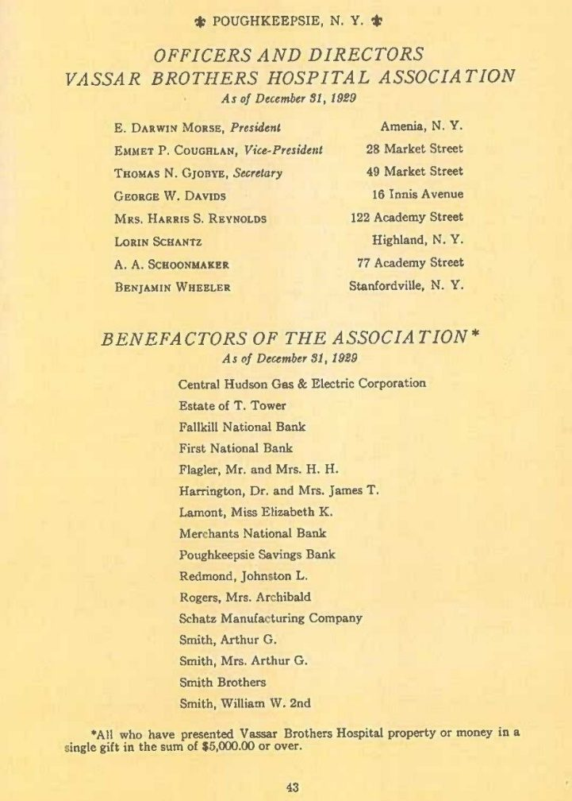
She also kept her ties to Cornwall and Lebanon. Property maps showed she had retained inherited property in parts of Colebrook and Cornwall, selling them in 1919.
In 1902 she and her brother donated a mosaic marble tablet to St. Luke's Episcopal Church of Lebanon as a memorial to their parents William and S. Ellen Coleman. The tablet remains today as one element among many that adorn the great, historic sanctuary. For several years later in life she corresponded with the rector of the church, stating in one letter "My brother Robert Coleman and I built the church in memory of our father. My mother Mrs. Wm. Coleman gave the font and was much interested in the parish." Her mother had also founded the Episcopal Church Home for children in Jonestown, where the beloved pastor from her childhood, Rev. Alfred Abel, had returned to the region to serve. Anne continued to support the institution in the memory of her mother, up to the 1930s, but lamented that due to economic conditions she no longer had sufficient money to meet all financial obligations of the home.
In her will she designated $1,000 each to both St. Luke's and to the Church Home.
Anne Rogers, FDR and the King of England
With eight children Anne Rogers may have been busy enough, but her home served as a place for playmates, including young Franklin Delano Roosevelt, next-door neighbor and only child, who received some schooling within Crumwold Hall. One can imagine how her generous spirit influenced this young boy who would become a popular president, the only one to serve more than two terms.
According to a letter from the FDR Library, the Rogers' sons were "inseparable companions" of young FDR. In Geoffrey C. Ward's book "Before the Trumpet," a chronicle of FDR's early life, Archie Rogers Jr. was his closest companion, followed by Edmund, a close second. They would ride ponies along the forest path between the two estates and dig tunnels in the snow. Together they learned their ABCs from a governess in the Crumwold Hall tower schoolroom. Young Franklin experienced the sadness of losing a friend when Archie died at age 9 of diphtheria.
Franklin was a more formal guest on occasion at the Rogers' home, as well as on vacations such as to Loon Lake. Anne would compare notes from time to time with his mother Sara Ann Roosevelt, as their respective sons grew up together.
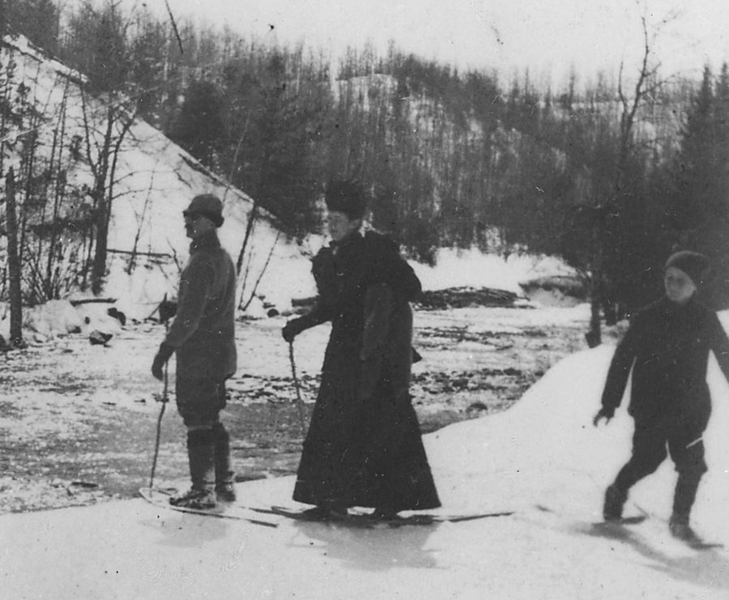
Years later, Anne remained close to the Roosevelt family, and Edmund remained close friends with Franklin. In 1929, while FDR served as governor of New York State, Edmund writes to mother Anne of difficulty they have been having raising money for their church (presumably St. James Episcopal Church of Hyde Park). Apparently the Vanderbilts had pledged $1,500 and challenged others to match the contribution. He laments that the Roosevelts had yet to "fork up" their share amounting to several hundred dollars. Being unsuccessful at getting Franklin to come through, Edmund asks mother Anne to persuade both Eleanor and Franklin's mother to "come across" with the promised funds.
One remaining and incredible story can be told, that of Anne's youngest son Herman Livingston Rogers (b. 1891). After graduating from Yale and MIT, by 1917 he served as an officer in WWI and then a short career in engineering. Within seven years he chose instead to enjoy the fruits of his parents' wealth, leading a life of travel and luxury.
He and his wife Katherine were living in Peking in the 1920s when they offered Katherine's friend Wallis Simpson (famed for her marriage to the Duke of Windsor) a year-long refuge after her failed first marriage in 1924. Though Wallis was smitten with and preferred Herman, she apparently settled instead for a long-lasting friendship with them both. After returning from China, the Rogers spent the next ten years living in residences at Hyde Park, London, and their Cannes villa, Lou Viei, on France's Cote d'Azur. In 1936 (within two years of mother Anne's death) as news of King Edward VIII's abdication erupted in the public domain, Wallis went into hiding at Lou Viei, where the Windsors would later spend part of their honeymoon.
According to some reports, Wallis, Duchess of Windsor, remained in love with Herman (who died in 1957) though remaining married to Edward until his death in 1972.
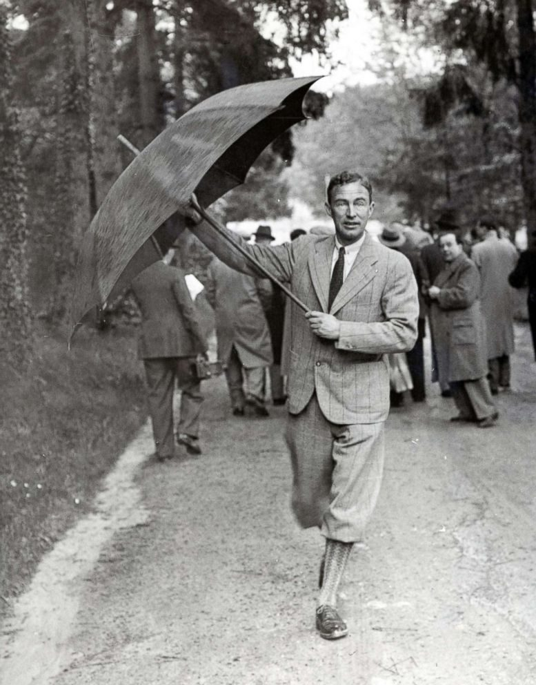
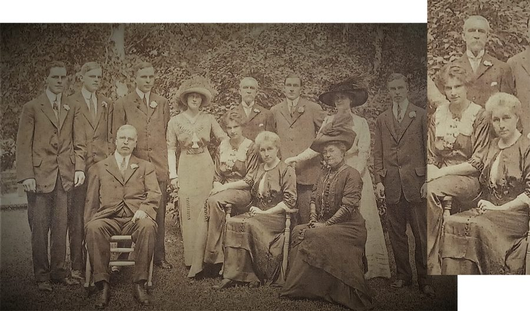
Retrospective
Anne Rogers reigned as a woman of grace into her seventies, outliving Archie, who had died in 1928, and arguably surpassing her brother Robert Habersham Coleman, who had suffered financial ruin in 1893. Described in a first-hand account by her brother's grandson, Robert Coleman Jr., she was gracious, kind, thoughtful, well-mannered. He had come to live for a time at Crumwold Hall at age 8 in 1932. Referring to her as Aunt Annie, he tells how she had arranged a governess for him to teach him certain things "to straighten him out." He had to be dressed in a tie and coat for dinner; he remembers her having 32 servants at that time. He also had two large cases filled with his father's or grandfather's stuffed birds, which his mother was not fond of, so he learned to shoot a gun by using the birds as target practice, reducing them to dust. With antics such as these and of her adult son Herman, Anne must have had a sturdy sense of humor. Perhaps it reminded her of her earliest days, a young girl in admiration of her big brother.
Within a few years following her death the Crumwold property passed from her children, serving several purposes including as a school for boys and girls. Further details of Crumwold Hall history may be found at househistree.com.
Whereas her brother Robert H. Coleman receives most of the attention in Cornwall's iron history, certainly more than is recorded in this story could be written of Anne's life — one that has integrated many facets of the mosaic of American history, from the colonial era, northern and southern development, civil war, the wild west, the gay nineties and roaring twenties, presidents and the prosperity of the 20th century. How remarkable, the life of Anne Coleman Rogers.
A 2026 Update
On New Year's Day of 2026, Crumwold Hall suffered a catastrophic fire, started by a space heater, which took 33 hours to control. The structure has essentially been condemned, unsafe for occupancy.
In a less severe case, the Ashburton House, which the Freemans enjoyed and which later became part of the historic St. John's Episcopal Church on Lafayette Square, known as the "Church of the Presidents," suffered significant damage during protests in Washington, D.C., on the night of June 1, 2020, in the wake of the killing of George Floyd.
Cornwall Iron Furnace and its "John and Margery Feitig Collection." Photographs are from the Furnace, unless credited otherwise.
Mr. Terry Heisey, Principal Organist and Director of Music, St. Luke's Episcopal Church, Lebanon, for assistance with details of the mosaic plaque and the Jonestown Children's Home.
Originally published as a four-part series on LebTown, August 23 – September 13, 2023.